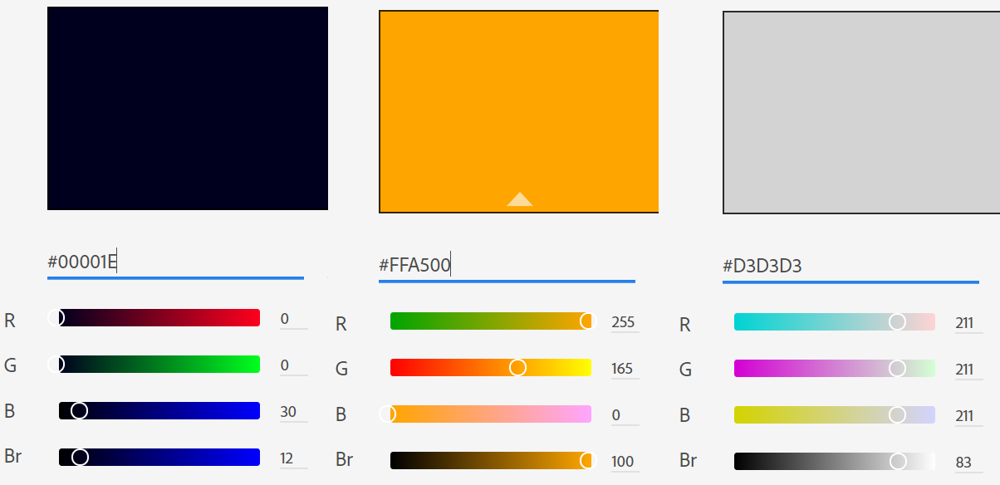

Color-Scheme
For all my websites I have decided to use a very defined color scheme.
For the headers and the footer, I have used a navy blue color
For the body, on the pages, I have used an orange color to create contrast and make the website striking
For the typography, I have used a light gray color to highlight the information, and finally, in the paragraphs, I have used white color to make it easy to read.
